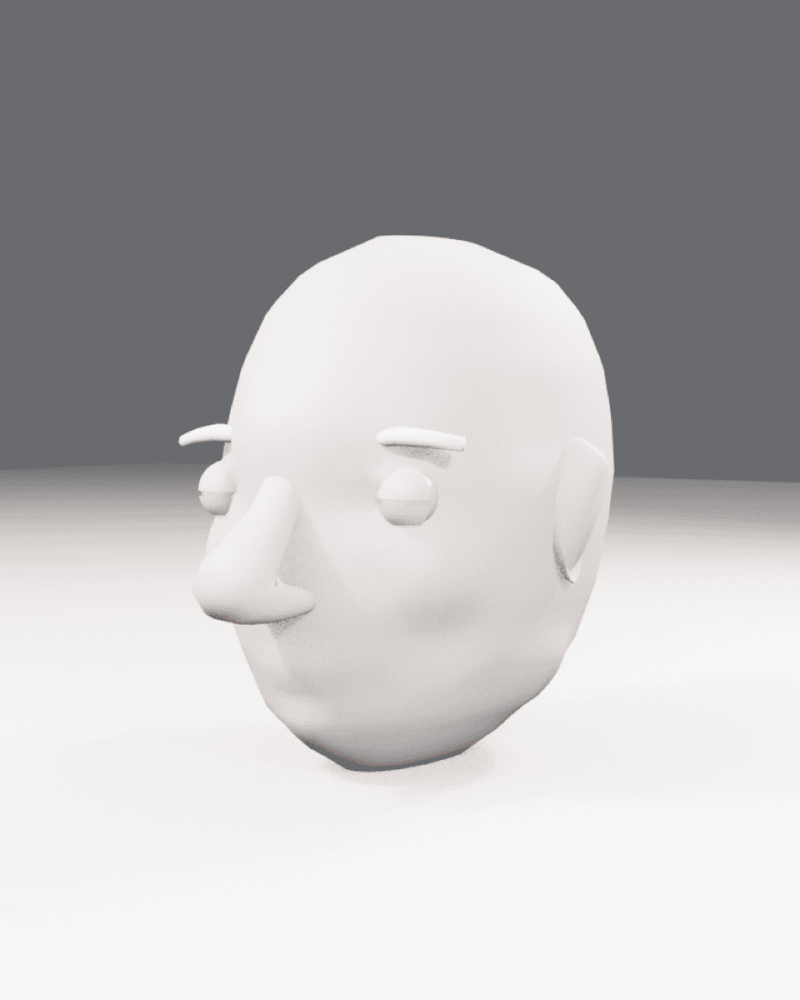
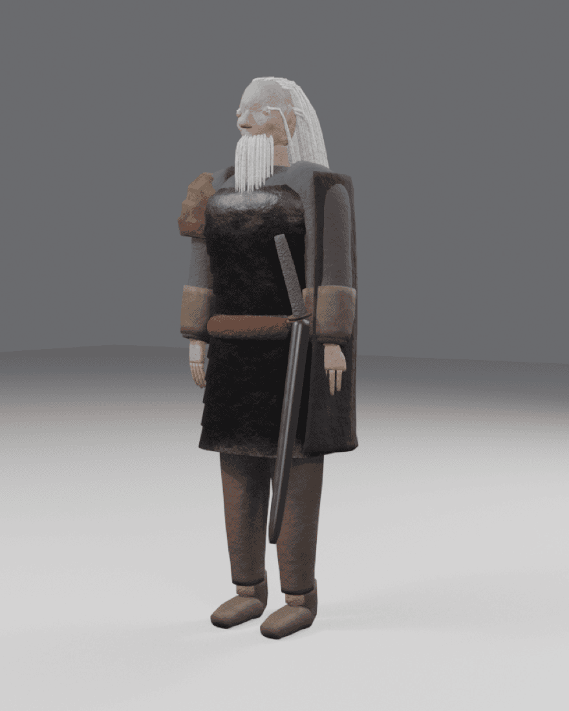
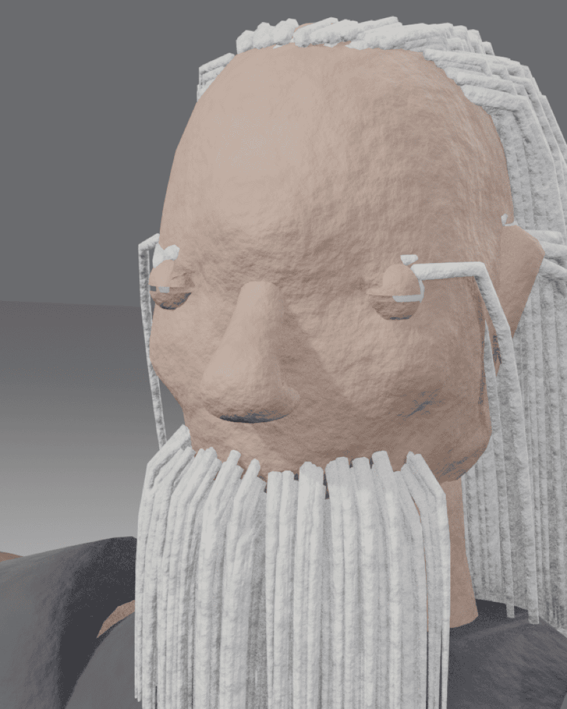
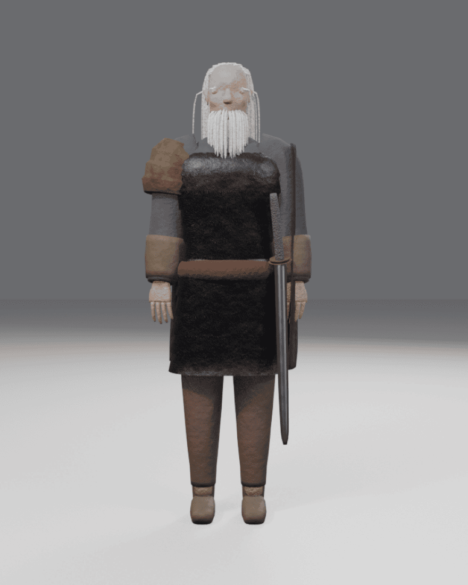

An experiment
Can an agent make 3D animation, if you build a strict enough harness around it?
That question is the whole reason this exists. A language model cannot see what it makes, cannot sculpt, and writes 3D code that fails quietly. Blendy is an attempt to find out how far it can get anyway when everything it does has to go through a document, a validator and a render it is made to look at.
Agents model, rig, texture, animate, light and shoot in Blender; a person directs. The only software involved is Blender and the add-ons that ship with it, and the only outside input is a reference image.
This is a work in progress and nowhere near a conclusion. Characters come out stylized rather than convincing. Rigging and posing are not built. Several layers have only ever run in their own tests. Everything below describes how it works and where it currently falls down — none of it is a claim that the question has been answered.
The problem
Generated bpy code fails quietly.
The obvious way to put a language model in a 3D package is to let it write scripts. It does not work. The model cannot see what it made, so errors compound invisibly; a script that half-executes leaves the scene in a state nobody can reason about; and there is no way to roll back to the last thing that was right.
Blendy replaces the script with a document. A shot is JSON. A character is JSON. A deterministic compiler turns either into a Blender scene, and nothing else is permitted to write to Blender at all. That single constraint buys diffs, reproducibility, validation before execution, and one place to look when something breaks.
The agent has no code-execution tool and never will. Its only route into the scene is editing the document and recompiling. When it needs a capability that does not exist, that is a builder to add to the compiler, not an escape hatch to open.
{
"id": "haldin", "kind": "character", "height": 1.82,
"parts": [
{ "id": "torso", "op": "loft",
"params": { "path": [
{ "position": [0, 0, 0.92], "size": [0.155, 0.105] },
{ "position": [0, 0, 1.36], "size": [0.205, 0.118] }
] } },
{ "id": "head", "op": "head", "parent": "torso",
"params": { "brow": 0.9, "jaw": 0.8, "age": 0.95 } }
]
}
The loop
Edit, compile, look, revise.
Every mutation is followed by a render the agent reads back. It is not allowed to batch five edits and hope. Validation runs outside Blender and is the compiler's first step, so a bad document fails before the scene is touched, with an error naming the offending entity rather than a traceback.
What is enforced, not merely suggested
- DeterminismThe same document builds the same scene every time. A test builds twice and compares a fingerprint of the whole scene graph.
- TotalityA build either completes or fails with a validation error. There is no partial state to debug.
- CheckpointsEvery accepted step snapshots the document and the
.blend. A bad step costs one step, never the session. - LandmarksPositions can be written
@hero.eye_midpointand resolve at compile time. Reposition the character and the camera move follows. - InheritanceFrame rate, lens set, casting and continuity live in a sequence bible. A shot that disagrees fails validation rather than quietly drifting.
Vocabulary
Shapes the compiler knows how to make.
An agent cannot invent geometry any more than it can invent a new letter. It composes from builders, and each builder takes quantities a person can reason about — meters, radians, counts — because parameters that only make sense by trial and error are parameters an agent cannot use.



- loftCross-sections swept along a path into quad topology. Torsos, limbs, sleeves, boots.
- head, handParametric anatomy that publishes named points, so a recipe places an eye at
point:eye_lrather than guessing a coordinate. - sheetA quad sheet that can start wrapped around the body, then falls under simulation and bakes. A cloak that starts flat never drapes.
- hairTapered strands grown off an emitter surface, turned by gravity within the first centimeters. Deterministic for a seed.
- pushOne sculpting primitive: a smooth displacement with a center, a radius and a direction. Brows, sockets, wrinkles, dents.
- revolve, extrude, tube, skinTurned forms, plates and straps, ropes and cables, and quick rough volumes.
Direction
The human is the director, not the operator.
Work happens in a local studio: a conversation on the left, turntables and previews in the middle, and the shot or model being inspected on the right. Long runs survive a page reload, and a live activity feed shows which tool is running and for how long.
Camera work is authored by hand when taste is faster to demonstrate than to describe. Moves are recorded in a browser viewport and stored relative to landmarks, so they survive re-blocking, re-timing and recasting.
Gates that do not move
A person approves the bible, reads every line of the shot breakdown, and lands every skill edit. A separate agent reviews renders with no access to the reasoning that produced them, because an agent that just built something judges it against what it meant to do rather than what is on screen.

Limits
What this does not do.
A model iterating against renders reaches a stylized, recognizable character. It does not reach the concept painting, and the last twenty percent is not a prompting problem.
- No photoreal likeness. Faces read as stylized. Fine facial detail and skin realism are out of reach.
- No outside software or services. No mesh generators, no mocap vendors, no marketplace rigs. Blender and its bundled add-ons only.
- No hand-sculpting. Every capability is a builder the compiler owns and the schema names. There is no brush.
- Retargeted and procedural motion is the ceiling for performance. Nuanced acting is not in scope.
- Detail is procedural. Wear, grunge and scratches are noise fields, so rivets and stitching are implied rather than modeled.
Getting started
Run it locally.
Blender 5.1 or later must be installed. The agent side drives the Claude Code CLI, so it runs on whatever account is already signed in there.
git clone https://github.com/Ut8v/blendy cd blendy python3 -m venv .venv ./.venv/bin/pip install fastjsonschema mcp numpy tests/run_all.sh # unit tests, no Blender tests/run_all.sh --blender # plus the compiler suites ./.venv/bin/python -m server.studio
The studio opens on 127.0.0.1:8765. Point a model recipe's
reference field at your own image under
assets/references/.
Reading the code
- spec/JSON Schema for shots, models, the bible and the breakdown. Start here; everything depends on it.
- compiler/Validation, and the builders and resolvers that run inside Blender.
- server/The MCP tool surface, the studio, the database and the learning loop.
- models/Model recipes. One document per character, prop or set.
- tests/blender/Headless tests against real Blender. Nothing here mocks
bpy.